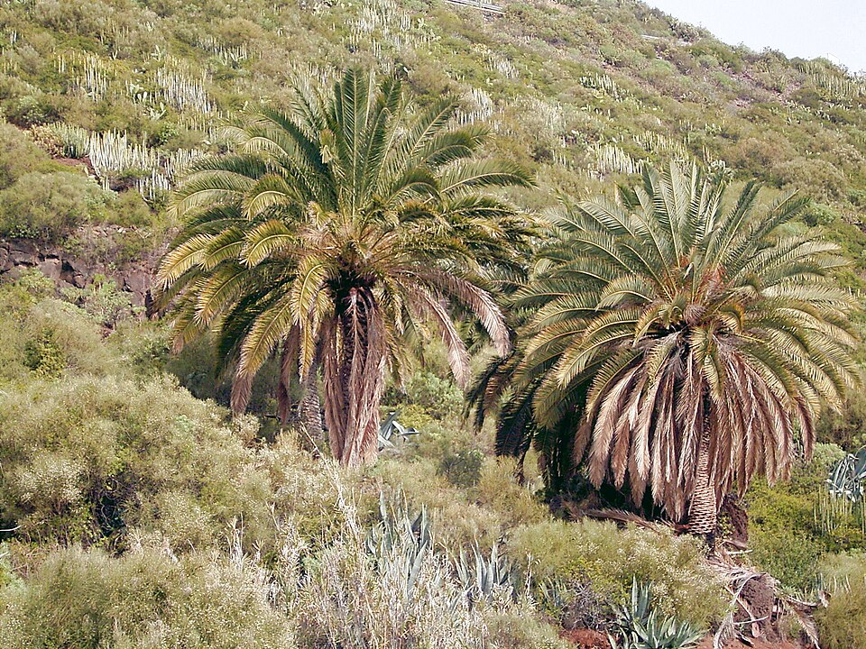
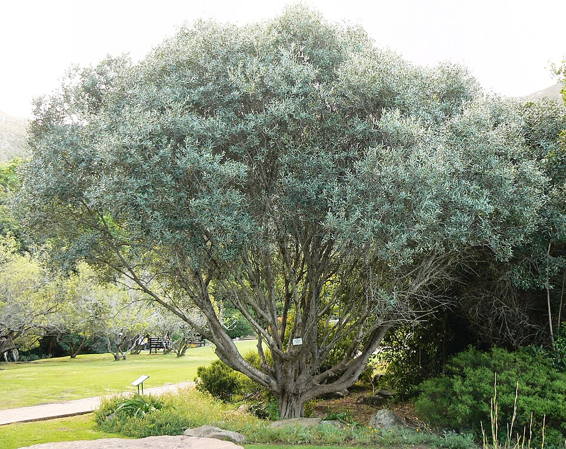
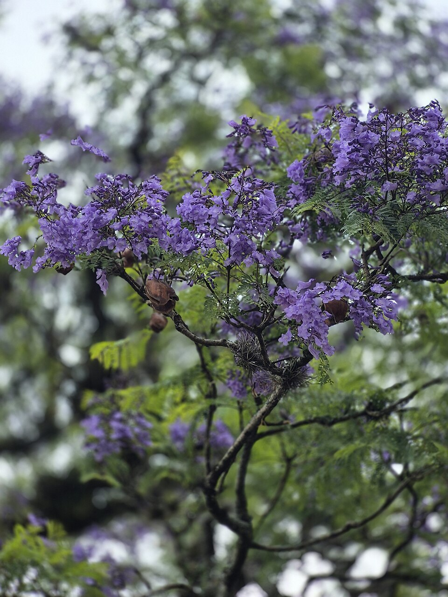
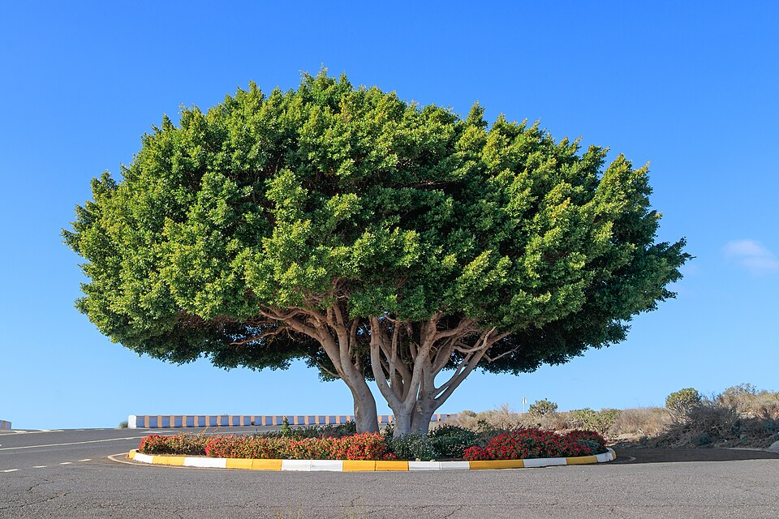
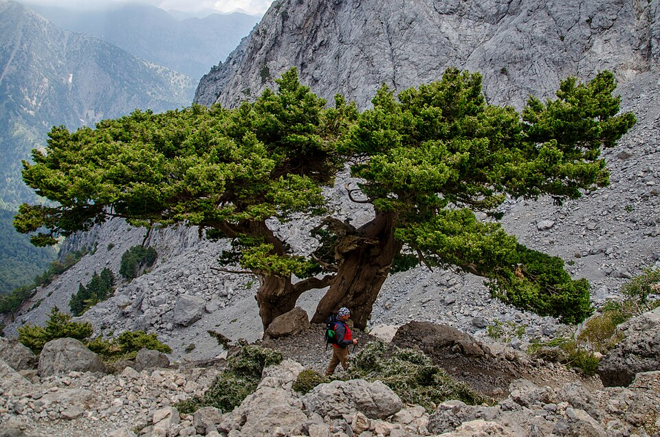
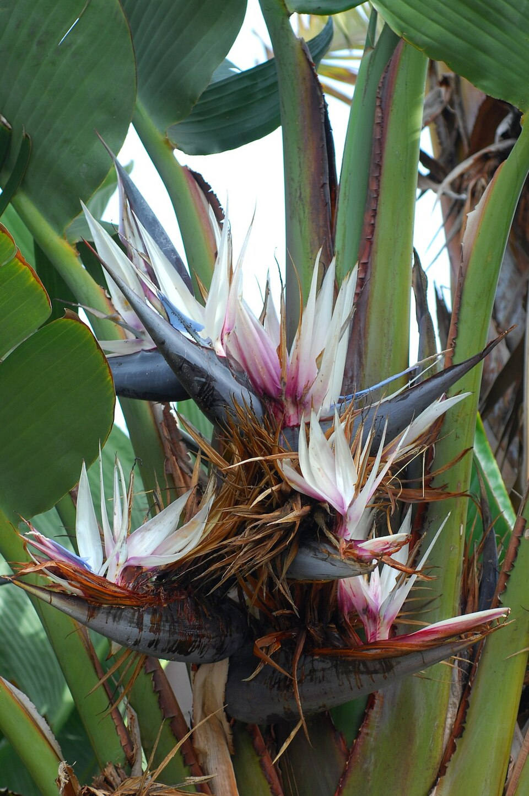

Palmier
PalmierPalmier de Bismarck
Bismarckia nobilis
Un feuillage en éventail bleu argenté et une silhouette sculpturale pour les jardins ouverts.
Découvrir le Bismarckia →Des arbres méditerranéens aux palmiers sculpturaux, découvrez une sélection pour imaginer votre prochain jardin. Notre équipe vous accompagne dans le choix des plantes adaptées à votre projet.
7 plantes
PalmierBismarckia nobilis
Un feuillage en éventail bleu argenté et une silhouette sculpturale pour les jardins ouverts.
Découvrir le Bismarckia →
PalmierPhoenix canariensis
Une couronne généreuse de palmes arquées, pour structurer une entrée ou composer une allée.
Demander un devis →
Arbre méditerranéenOlea europaea
Feuillage persistant, reflets argentés et tronc de caractère. Un grand classique du jardin méditerranéen.
Demander un devis →
Arbre à fleursJacaranda mimosifolia
Une floraison mauve et un feuillage léger, pour apporter de la couleur et une ombre délicate.
Demander un devis →
Arbre persistantFicus microcarpa
Une végétation dense et une belle présence, pour les jardins, les haies et les compositions structurées.
Demander un devis →
ConifèreCupressus sempervirens
Une ligne élancée et un feuillage persistant pour rythmer les perspectives et les limites du jardin.
Demander un devis →
Plante tropicaleStrelitzia nicolai
De grandes feuilles graphiques pour donner du volume et une atmosphère tropicale aux espaces abrités.
Demander un devis →Aucune plante ne correspond à votre recherche. Essayez un autre nom.
Parlez-nous de vos envies, de votre espace et de votre ville.
Le choix des plantes, les dimensions et les disponibilités sont à confirmer avec notre équipe.
Photographies botaniques d’illustration. Crédits photos.